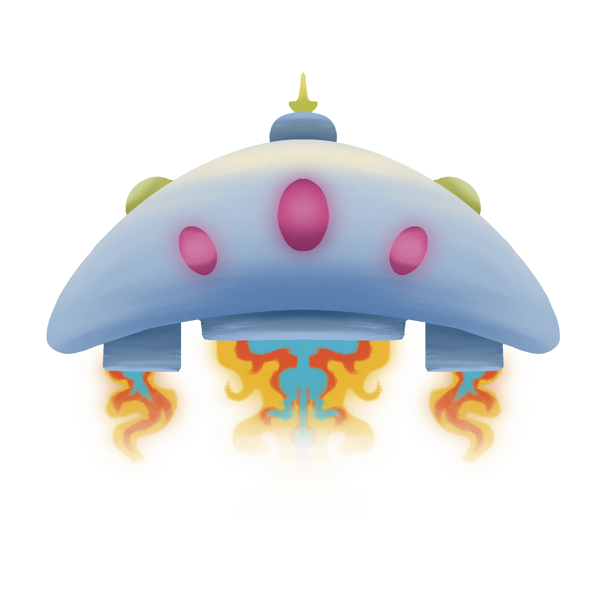
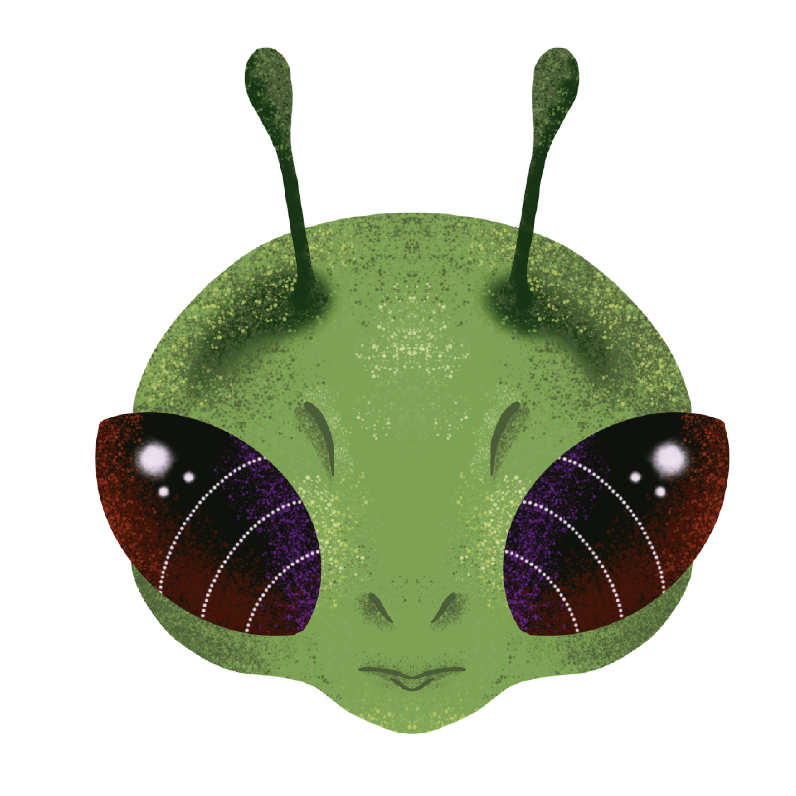
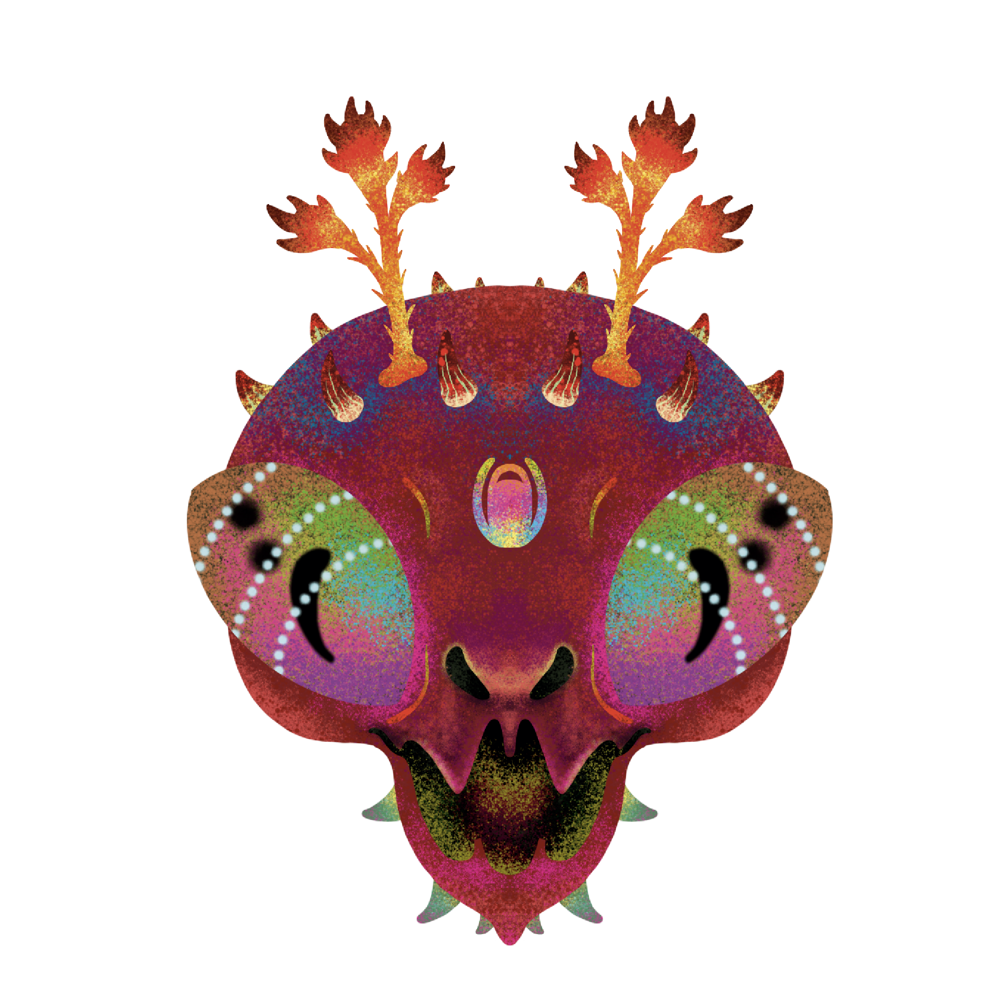

¡Bienvenido a Ak Attack!,
tu videojuego de marcianitos!
¡ALERTA EN EL SECTOR 7!
Año 2142.
Una horda alienígena desconocida ha irrumpido en las fronteras de la Tierra.
Organizados en
formaciones de ataque implacables, sus escuadrones descienden sin tregua hacia nuestra atmósfera
mientras despliegan un fuego cruzado devastador.
Eres el último piloto en pie. A bordo de tu nave de combate, la última defensa del planeta, tu
misión es
clara: esquivar los proyectiles enemigos, calcular cada disparo y exterminar hasta al último
marciano
antes de que toquen tierra firme.
Prepara los mandos, afina tu puntería y no dejes ni un solo invasor con vida.
¡El destino de la humanidad está en tus manos!
Los protagonistas
La defensora
Pium-Pium

Es la última línea de defensa de la Tierra frente a la invasión. Un prototipo de alta agilidad equipado con un cañón de plasma de disparo rápido. Aunque cuenta con gran movilidad para esquivar el fuego cruzado, no resistirá demasiados impactos directos.
El invasor
Peón de la horda

Es la última línea de defensa de la Tierra frente a la invasión. Un prototipo de alta agilidad equipado con un cañón de plasma de disparo rápido. Aunque cuenta con gran movilidad para esquivar el fuego cruzado, no resistirá demasiados impactos directos.
El gran líder
Xor-Gath, el Destructor

El comandante supremo de la flota enemiga. Un espécimen más grande, letal y resistente que comanda la invasión desde la retaguardia. Solo entra en combate cuando sus tropas han sido mermadas, alterando el ritmo del ataque con proyectiles pesados y patrones de disparo impredecibles.
Cómo jugar
Usa las flechas de dirección Izquierda y Derecha para desplazar tu nave por
la parte inferior de la pantalla y presiona la Barra Espaciadora para disparar tu cañón de
plasma.
Tu objetivo es eliminar a todas las oleadas de invasores antes de que alcancen tu
posición o agoten tus vidas con sus disparos. Mantente en constante movimiento, esquiva el
fuego
enemigo y destruye a todos los invasores que van a por ti.
¡Buena suerte!
Desarrollo y tecnología
El juego ha sido desarrollado íntegramente en Java, haciendo uso de la biblioteca gráfica Swing para la construcción de la interfaz y la gestión de la pantalla. Mediante el uso de componentes como JPanel y la renderización en tiempo real con Graphics2D, se controlan de forma fluida los movimientos de la nave, la generación de las hordas enemigas y la detección de colisiones mediante bucles de animación (game loops) programados a medida.